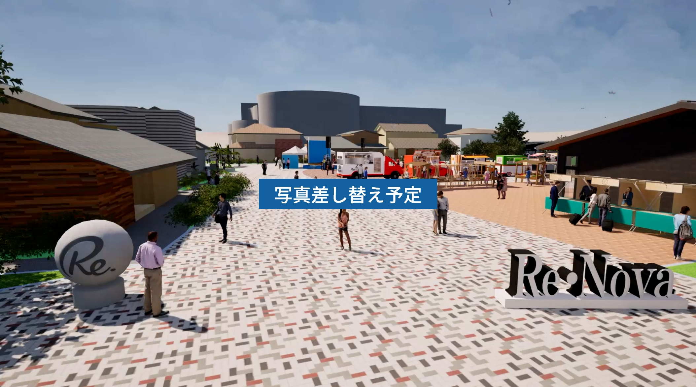

<div class="top-sec-1">
  <div class="top-sec-1__inr">
    <div class="blks-1">
      <p class="copy">「歴史<span class="_t2">」と</span>「未来<span class="_t2">」</span>を彩る<br>『<span class="copy__ruby">現在<span class="copy__rt">いま</span></span><span class="_t2">』</span>を創造する。</p>
    </div><!-- / .blks-1 -->
    <div class="blks-2">
      <div class="mv">
        <div class="swiper-container">
          <div class="swiper-wrapper">
            <div class="swiper-slide"></div>
          </div>
        </div>
      </div>
    </div><!-- / .blks-2 -->
  </div><!-- / .top-sec-1__inr -->
</div><!-- / .top-sec-1 -->